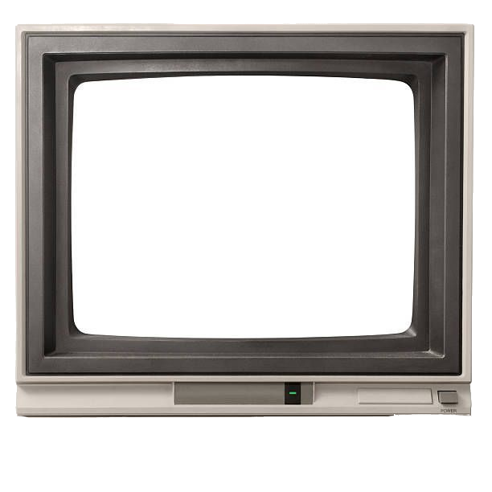

KNES 381
a portfolio by
Creative portfolio for KNES 381
KNES/381 BIOS v2.0.1 (C) 1995
CPU: Intel Pentium 100MHz
Memory Test: 640K OK
Detecting IDE drives... OK
Loading Windows 95...
My nickname is KC. I am a student interested in health and medicine.
>> Explore the folders below:
Program: Exercise and Health Physiology
Institution: University of Calgary (2022 – 2026)
Courses: KNES 381, KNES 259/260
Managing Social Media For Womens Heart Health Event (Jan 2026).
Youth Camp Lead (Apr 2023).
Music, videography, japanese cars, data analysis, crocheting.
Upload a subject CSV file to generate metabolic plots.
>> Click the folder icon to upload a CSV file.
